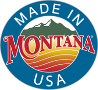
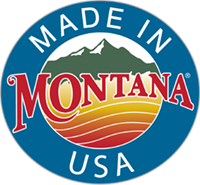

Wood Products MMIS@business.umt.edu www.bber.umt.edu Made in Montana Renewable Wood Energy Product Directory
Increased use of Montana Wood products has many benefits for all of us—and especially for our forests. The Montana Wood Products Directory was created to help Montanans identify local wood sources, locate and purchase available wood products.
If you represent a wood products manufacturer or supplier, make sure your contact, sales and product information are shown accurately in the directory. Add a website or social network for consumers to learn more.
If adding or updating your business, please select the category most appropriate for your products. Product categories in this directory include: bark; boat building; cabinets and counter tops; cedar; engineered wood products; fuelwood; furniture; furniture and fixtures; independent artist, primary logs; independent artist, secondary wood; log furniture; log home; millwork, doors and windows; pallets, stakes and containers; particle board/MDF; plywood/veneer; post/pole; prefabricated buildings; primary wood; sawmill; secondary wood; signs; specialty wood products; and sporting goods (such as bows and gunstocks).